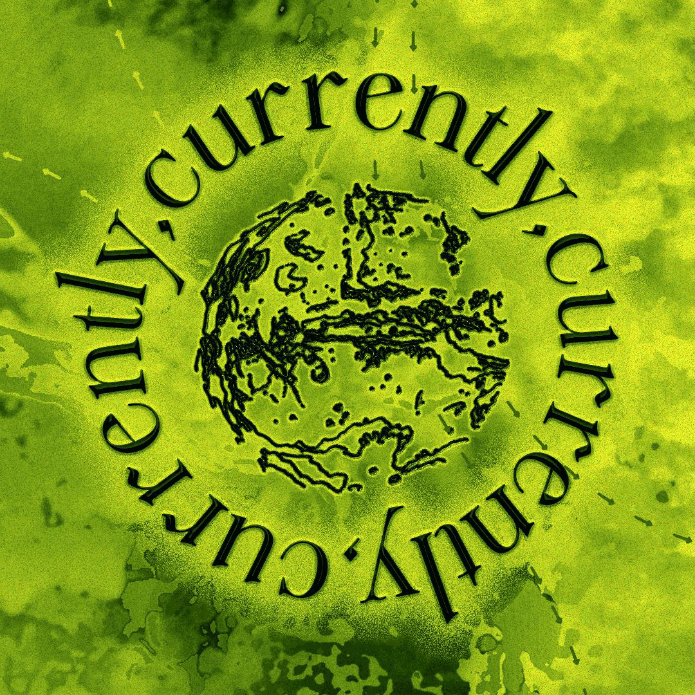

CURRENTLY, CURRENTLY, CURRENTLY: Lens-Based Media Graduation Show 2024
Master students of the Lens-Based Media programme at the Piet Zwart Institute invite you to their graduation show at V2 and WORM, Rotterdam.
We are here and we need to tell you something. CURRENTLY, CURRENTLY, CURRENTLY brings attention to urgent questions through the practice of moving image. Along 14 distinct works, each their own current, we explore personal, political and ecological concerns in the world we live in.
Currently, it has to do with all of us.
Featuring: Sara Fattahi, Clara Franke, Ieva Grabauskaite, Yalou Groeneweg, Luni Milda Jančoraitė, Sam Koopman, Aitana López Rodrigo, Nosh Neneh, Panida Petchara (Te), Nina Rojc, Muyang Teng, Claudio Tola, Arabella Turner, Lau Zautsen
CURRENTLY, CURRENTLY, CURRENTLY - MA Lens-Based Media Graduation Show 2024